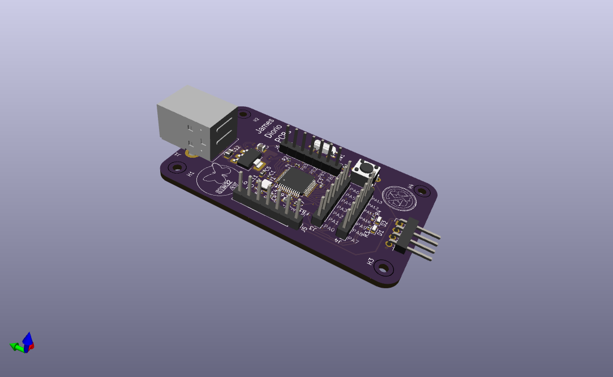
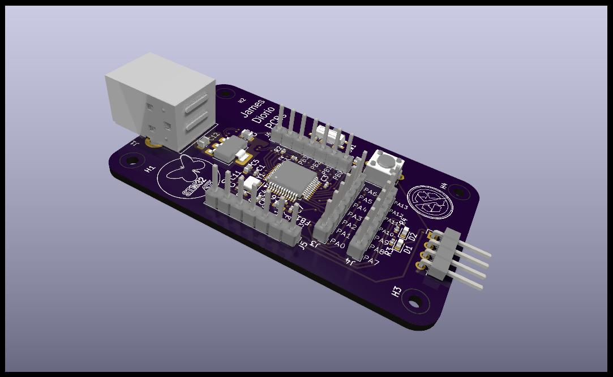
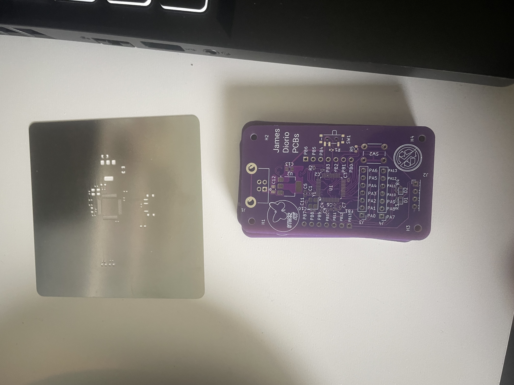
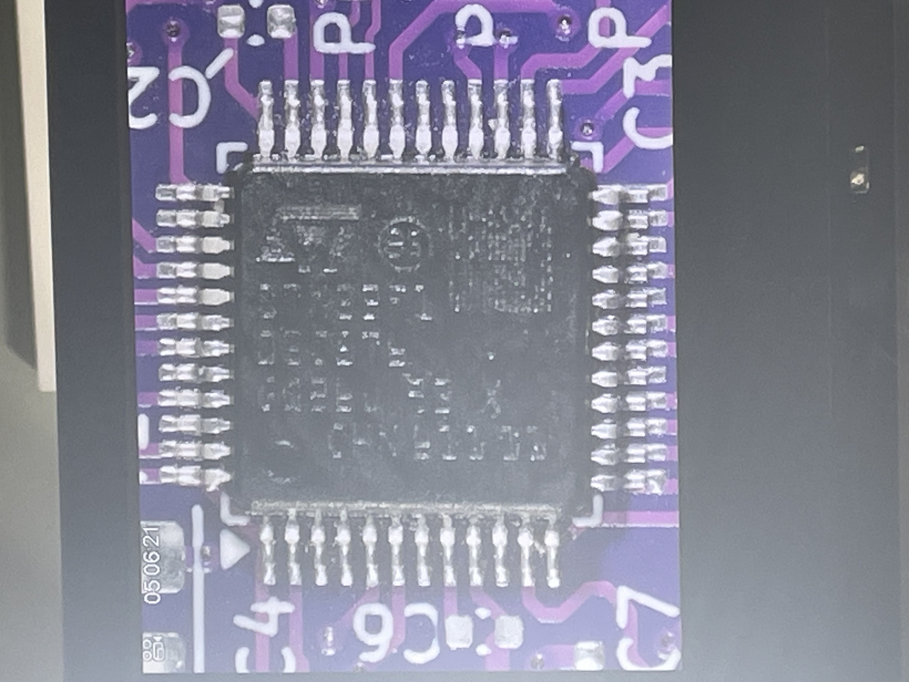

Failed Developer Board v1
1. PROBLEM AND OBJECTIVE
Problem: The project set out to build a developer board based on a Phil's Lab design, with USB Type-B, SWD communication, indicator LEDs and a voltage regulator.
Objective: Design and build a developer board based on a Phil's Lab video, with an MCU, USB Type-B, SWD communication, indicator LEDs and a voltage regulator.
2. TOOLS AND TECHNOLOGIES
Hardware, components and materials: MCU, USB Type-B connector, SWD interface, two indicator LEDs, voltage regulator and supporting components. JLCPCB manufactured the boards, which were soldered by hand.
Software and programming languages: PCB schematic and layout software supported the design.
3. SOLUTION DESIGN AND DEVELOPMENT
The schematic was created first, followed by the PCB layout. The finished design was sent to JLCPCB. After the boards arrived, the components were soldered onto them.
4. CHALLENGES AND PROBLEM-SOLVING
After assembly, neither indicator LED turned on and the board could not connect for communication. The next step was to begin a simpler MK2 design.
5. TESTING AND RESULTS
The board was plugged in and a connection was attempted. The LEDs stayed off and the connection failed, so version 1 did not work as intended.
6. LESSONS LEARNED AND FUTURE IMPROVEMENTS
The project built experience in electronics and PCB design, leading to plans for a simpler MK2.
7. INDIVIDUAL CONTRIBUTIONS AND RESOURCES
The board was designed and assembled from a Phil's Lab video inspiration.
SUPPORTING MATERIALS
- [x] Project photographs - design renders and board close-ups are shown below.
- [x] Test results - the failed power-on and connection attempt are described.
- [x] Reference link - project PDF.



